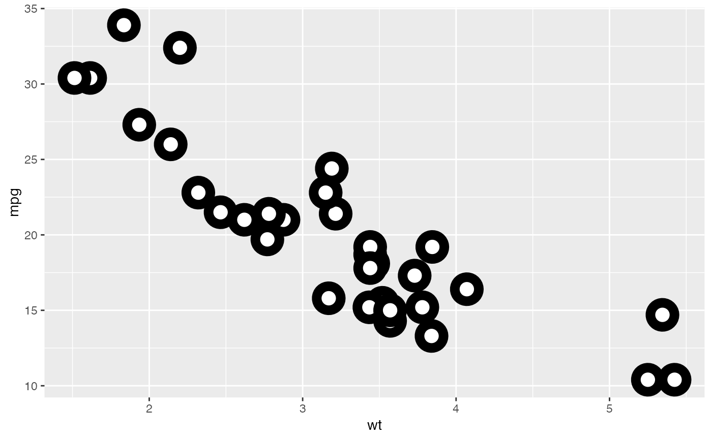

The point geom is used to create scatterplots. The scatterplot is most
useful for displaying the relationship between two continuous variables.
It can be used to compare one continuous and one categorical variable, or
two categorical variables, but a variation like geom_jitter(),
geom_count(), or geom_bin2d() is usually more
appropriate. A bubblechart is a scatterplot with a third variable
mapped to the size of points.
Arguments
- na.rm
If
FALSE, the default, missing values are removed with a warning. IfTRUE, missing values are silently removed.- ...
Other arguments passed on to
layer(). These are often aesthetics, used to set an aesthetic to a fixed value, likecolour = "red"orsize = 3. They may also be parameters to the paired geom/stat.
Overplotting
The biggest potential problem with a scatterplot is overplotting: whenever
you have more than a few points, points may be plotted on top of one
another. This can severely distort the visual appearance of the plot.
There is no one solution to this problem, but there are some techniques
that can help. You can add additional information with
geom_smooth(), geom_quantile() or
geom_density_2d(). If you have few unique x values,
geom_boxplot() may also be useful.
Alternatively, you can
summarise the number of points at each location and display that in some
way, using geom_count(), geom_hex(), or
geom_density2d().
Another technique is to make the points transparent (e.g.
geom_point(alpha = 0.05)) or very small (e.g.
geom_point(shape = ".")).
Examples
p <- ggplot(mtcars, aes(wt, mpg))
p + geom_point()
# Add aesthetic mappings
p + geom_point(aes(colour = factor(cyl)))
p + geom_point(aes(shape = factor(cyl)))
# A "bubblechart":
p + geom_point(aes(size = qsec))
# Set aesthetics to fixed value
ggplot(mtcars, aes(wt, mpg)) + geom_point(colour = "red", size = 3)
# \donttest{
# Varying alpha is useful for large datasets
d <- ggplot(diamonds, aes(carat, price))
d + geom_point(alpha = 1/10)
d + geom_point(alpha = 1/20)
d + geom_point(alpha = 1/100)
# }
# For shapes that have a border (like 21), you can colour the inside and
# outside separately. Use the stroke aesthetic to modify the width of the
# border
ggplot(mtcars, aes(wt, mpg)) +
geom_point(shape = 21, colour = "black", fill = "white", size = 5, stroke = 5)

# \donttest{
# You can create interesting shapes by layering multiple points of
# different sizes
p <- ggplot(mtcars, aes(mpg, wt, shape = factor(cyl)))
p +
geom_point(aes(colour = factor(cyl)), size = 4) +
geom_point(colour = "grey90", size = 1.5)
p +
geom_point(colour = "black", size = 4.5) +
geom_point(colour = "pink", size = 4) +
geom_point(aes(shape = factor(cyl)))
# geom_point warns when missing values have been dropped from the data set
# and not plotted, you can turn this off by setting na.rm = TRUE
set.seed(1)
mtcars2 <- transform(mtcars, mpg = ifelse(runif(32) < 0.2, NA, mpg))
ggplot(mtcars2, aes(wt, mpg)) +
geom_point()
#> Warning: Removed 4 rows containing missing values (`geom_point()`).
 ggplot(mtcars2, aes(wt, mpg)) +
geom_point(na.rm = TRUE)
# }
ggplot(mtcars2, aes(wt, mpg)) +
geom_point(na.rm = TRUE)
# }